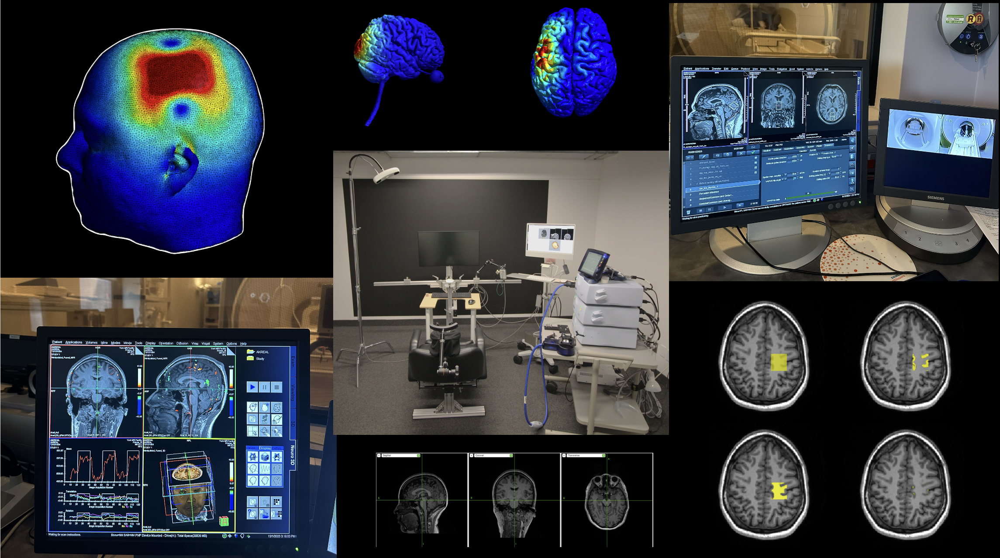

Current Projects
Project 1 - Differential Effects of Theta Burst Stimulation on Motor and Non-Motor Cortical Regions (V1): An MRI-TMS study.
Project 2 - Investigating the Role of Salivary Brain-Derived Neurotrophic Factor (BDNF) in Brain Plasticity.
Project 3 - Investigating the Role of GABA and Glutamate in Sensory Gating: An MR Spectroscopy Study.
Project 4 - Evaluating the Effects of Continous Theta Burst Stimulation on Visual Processing: An MRI-TMS Study.
Project 5 - Evaluating the Effects of Continous Theta Burst Stimulation on Motor Evoked Potentials: An MRI-TMS Study.
If you are interested in participating in any of the above projects please contact me at rcohan@yorku.ca.